Home
本文转载自： https://zhuanlan.zhihu.com/p/335811522
本文转载自： https://zhuanlan.zhihu.com/p/335811895
Orocos (Open Robot Control Software ) 是一个用来构建实时控制软件的C++框架，适合开发机器人或者机器的控制软件。Orocos 实时工具包提供了一个基础框架，以快速开发可运行在实时操作系统的应用，如RTAI和Xenomai ，当然它也支持 Linux 系统。
orocos简介
Orocos (Open Robot Control Software ) 是一个用来构建实时控制软件的C++框架，适合开发机器人或者机器的控制软件。Orocos 实时工具包提供了一个基础框架，以快速开发可运行在实时操作系统的应用，如RTAI和Xenomai ，当然它也支持 Linux 系统。这个计划的目的是要开发一种通用的，免费的模块化架构，用于机器人控制。Orocos计划用四个C++库组成：实时工具集，运动学与动力学算法集，贝叶斯过滤库 及 Orocos组件库。如下图，orocos toolchain 包含了实时工具集和Orocos组件库。[1]
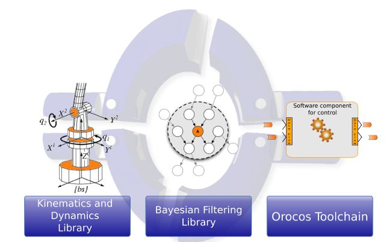
Orocos 是工业领域一个非常通用的软件架构，相当于一个企业的架构师.首先，Orocos 兼容 Xenomai，实时性能非常好，所以也支持Ether CAT 在其软件框架上开发。第二，Orocos 组件与组件之间的通信非常好，避免使用全局变量，这样就可以减小各个功能模块之间的耦合，方便每个开发人员开发自己的模块，最后融合时也很快。第三，Orocos 是一个非常成熟的软件框架，在欧洲很常用，并且有自己的社区，有很多开发人员会将自己设计好的算法组件发布到社区上，这样就大大减小了开发难度，因为有很多算法可以在 Orocos 社区找到，直接作为组件加载进入自己的软件。第四，Orocos 的初衷就是为了方便大家对机器人进行开发，包含了自己的运动学和动力学算法集，所以本论文采用 Orocos 可以节省很多时间和精力，在对多自由度机器人的运动学分析时，可以直接采用 Orocos 的运动学组件。
RTT：Orocos 实时工具集，为软件开发人员构建机器人应用时提供了基础机能，在实时功能、在线交互以及基于组件式的应用中发挥极大作用。
OCL：Orocos 组件库，由开发人员进行开发，一个独特的功能就是一个组件，Orocos 软件框架为 OCL 提供了通信功能、调试功能，很方便开发人员对其 OCL 进行开发。
KDL：机器人运动与动力学组件，为运动学提供了实时的动力学约束计算，这个组件非常有用，有了这个组件，很多机器人开发者可以快速地开发机器人算法。
BFL：贝叶斯过滤库，是由动态贝叶斯网络理论所推导出的。这个理论可以做递归信息处理及基于贝叶斯规则的算法评估，例如卡尔曼滤波，粒子滤波算法等。
orocos开发对象
1、架构级构建者
架构级开发难度非常大，它并不是一个具体的应用领域，而是提供了一个软件框架，方便其他开发者在该软件框架基础上继续开发。架构级开发者是Orocos整个软件框架的搭建者，其他的模块的开发都是以整个架构为基础的。其他开发者可以快速地在这个软件架构上快速、方便地开发自己的功能模块。Orocos的RealTime Toolkit, Kinematics Dynamics Library, BayesianFiltering Library及Orocos components这四部分是在这个软件框架上搭建的。
2、组件级构建者
在架构构建完成后，组件构建者可以在其基础上进行开发。在软件开发前，对其软件进行功能模块的规划后，组件开发者可以根据其各个功能对其组件进行开发。例如，可以将特定的算法模块封装成一个组件，将界面也封装成一个组件，将硬件抽象层也封装成一个组件，这样各功能模块都独立成一个组件，Orocos 也为组件与组件提供了通信接口，组件开发者之间就不存在耦合。
3、应用级构建者
应用级构建者在底层和组件构建者的基础上继续开发，将某一特殊的应用整合到一个特殊的应用场景当中。换句话说，应用级构建者在底层架构基础上，将不同功能的组件相连一起整合到一起就形成了一个应用。
4、最终用户
应用级构建者创建了特定的产品，而最终用户在这最终的产品上进行编程并执行特定的任务。
构建 Orocos 应用的方法
Orocos 是基于组件式的机器人软件开源操作系统。每个组件相当于一个特殊的功能模块。在社区上，由于 Orocos 的开源，现在已经有很多现成的开源组件，可以直接在社区上下载，也可以使用实时工具集来开发自己的组件。
下面介绍两种方法。
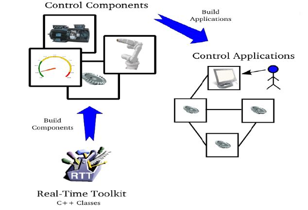
应用模板：应用模板的使用很简单，开发者只要在其提供的模板上添加相应的功能模块。一个应用模板可以包含多个组件，允许多个OCL 开发者进行开发。
控制组件：应用是由 Orocos 的控制组件所构成的。一个可分配的实体都有一个面向控制的接口。[1]
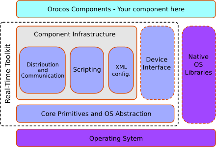
由于 Orocos 为软件开发人员提供了软件架构，而且也提供了很多现成的
组件。所以，组件开发者可以选择由实时工具集构建组件，也可以利用现成
的组件。从下图可以看出，一个控制组件拥有五个接口：属性、事件、方
法、命令还有数据端口。通过这些属性接口或方法接口可以与其他组件连接。
下面对这些接口进行详细的介绍：
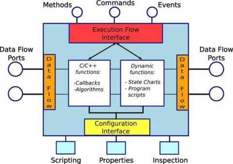
（1）数据流端口：通过数据流端口，组件可以很方便地与其他组件通信。这个可以减小各组件之间的耦合性，避免全局变量。
（2）属性：一个组件运行时的参数，其实就是一个组件程序中的变量，
如控制组件中机器人目标位置，加速度、速度等变量。
（3）方法：数据流减小了各组件之间的耦合，而方法则允许组件调用另
外一个组件中的方法，类似于系统调用，这样在解决了软件的耦合性的同时
也加强了组件之间的联系。
（4）命令：一个组件可以向其他组件发送命令，是另外一个软件执行
相应的命令。譬如，在机器人控制中的移动到某一位置、回零、急停等。
（5）事件：当控制系统发生状态变化时所执行的对应的功能。如达到
位置，紧急停车，目标己抓住。
小结
orocos概况就了解这么多，接下来要去研究KDL、 Real-Time Toolkit等组件的使用。至于orocs与其他开源项目相比有什么优势？大概可以从其官网的一句简介中看出：
This website is a home for portable C++ libraries for advanced machine and robot control. Click on one of the topics to learn more about these projects.
校对报告
当前使用的样式是 [自定义_中华人民共和国国家标准_GBT_7714-2005 New]
当前文档包含的题录共2条
有0条题录存在必填字段内容缺失的问题
所有题录的数据正常
参考文献
[1] 陈坚鸿. 基于Orocos的工业机器人轨迹跟踪研究[D]. 哈尔滨工业大学, 2017.
orocos toolchain安装
首先需要安装有ruby,且版本有要求，ruby1.8.7以上：make sure that the Ruby interpreter (>=1.8.7) is installed on your machine ruby --version
方法1:脚本安装
cd $HOME
mkdir orocos
cd orocos
mkdir orocos-toolchain
cd orocos-toolchain
wget -O bootstrap-2.6.sh http://https://gitorious.org/orocos-toolchain/build/raw/toolchain-2.6:bootstrap.sh
sh bootstrap.sh
source env.sh
这里会发现下载失败，出现404错误。
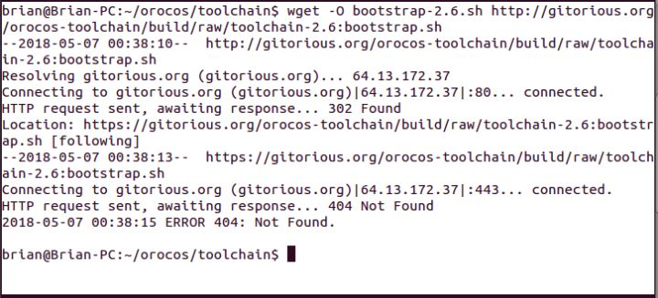
这是一个坑，辛亏页面底部的Discuss this Wiki page提示了这个链接不存在，要换个链接下载。这个链接既然不能用，为什么还不改过来，我觉得很搞笑！！！
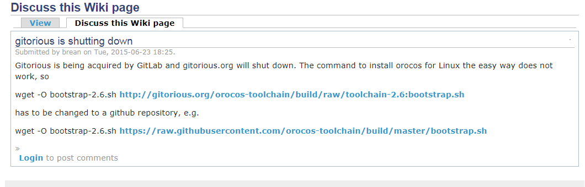
执行下面下载命令，可以顺利下载一个脚本
wget -O bootstrap-2.6.sh https://raw.githubusercontent.com/orocos-toolchain/build/master/bootstrap.sh
下载下来的脚本名字是bootstrap-2.6.sh，因此执行命令变为
sh bootstrap-2.6.sh
接下来又会出现错误了，提示ruby>=2.0.0，于是尝试各种方法安装上了ruby2.0，但还是出现同样的错误，这个坑我确实爬不出来了。只能换一种方法了。
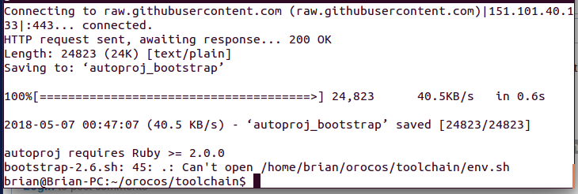
方法2：压缩包安装
过程大概如下，这方法也有不少坑。
cd $HOME
mkdir orocos
cd orocos
tar -xjvf /path/to/orocos-toolchain-<version>.tar.bz2
cd orocos-toolchain-<version>
./bootstrap_toolchain
source ./env.sh
autoproj build
（1）下载压缩包
到官网下载压缩包toolchain:https://www.orocos.org/toolchain,有点小坑，下载按钮躲在页面的右下角。
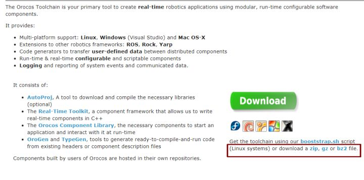
（2）解压
下载了一个名为orocos-toolchain-2.6.0-src.tar.bz2的压缩包
解压命令
tar -xjvf orocos-toolchain-2.6.0-src.tar.bz2
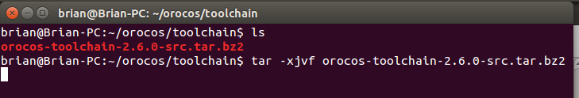
解压后，进入解压出来的文件夹
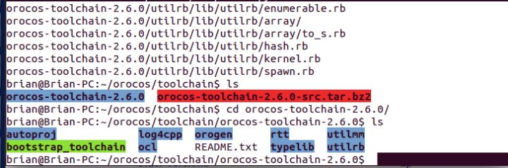
然后运行脚本bootstrap_toolchain
./bootstrap_toolchain
又一个坑要来了，会出现以下提示，让你选择all ,ruby,os或者none。
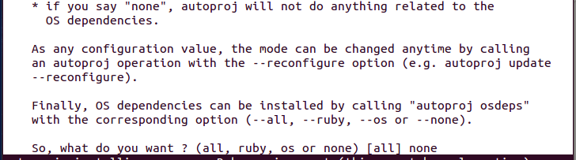
但是不管选择哪个选项，最后我都没有安装成功。我又去网上搜索了很久，各种方法试，还是没有找到解决方法。我彻底放弃治疗了！我想可能是我的ubuntu14.04版本太老了吧，一年前下载的，也没更新过。
但是也不能这样就放弃吧。我于是下载了ubuntu16.04版本进行安装。
======================================================================
我的测试结果及程序
下面是我测试的代码：